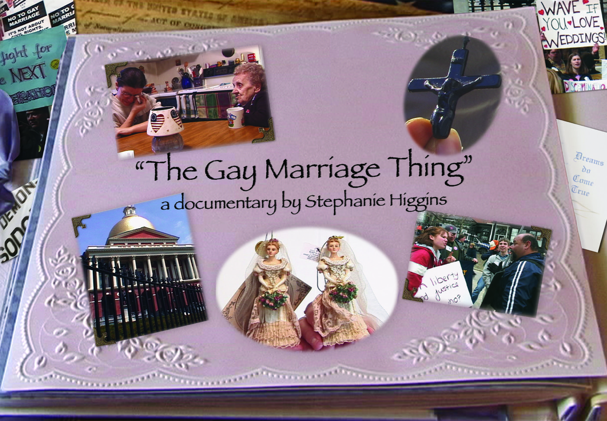

Documentary
The Gay Marriage Thing
Meet Lorre and Gayle, thirty-something college sweethearts marking their 15th anniversary by planning their wedding in the first US state to legalize same-sex marriage. Steff Higgins’ powerful 2005 documentary follows the couple through the chaos swirling around them, from pro- and anti-gay rallies to religious leaders and the chambers of the Massachusetts state house. The Gay Marriage Thing captures what gets lost in most news reports, the human emotions behind the headlines.
History
The Gay Marriage Thing was filmed in 2004 while Massachusetts legislators debated a constitutional amendment after the state's highest court ruled it was unconstitutional to withhold marriage rights from same-sex couples. On May 17, 2004 Massachusetts became the first state in the US to legalize marriage for same-sex couples. The film was hand delivered to all two hundred legislators serving in 2004.
Mission
The documentary puts a human face to the struggle for the rights of LGBTQ+ people. While at the same time talking to people on both sides of the debate. The film introduces viewers to the lesbians next door with a mission of inspiring conversation between people with differing views.
“As a long time fan of documentary film, I watch them more and more to gain fresh insight and support for long held beliefs but not to examine those beliefs. I will not air my beliefs on gay marriage here as this is not the forum for that. I will only say that THE GAY MARRIAGE THING has given me cause to reexamine certain perspectives. That is saying much for a short documentary in this day and age or in any day and age for that matter.”